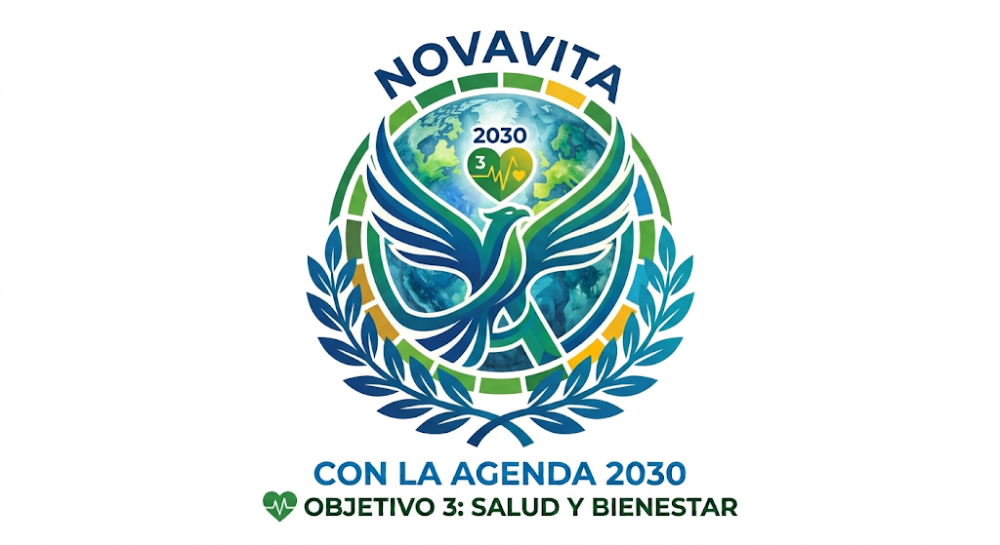

Nuestra misión
Promover la salud y el bienestar de los jóvenes mediante actividades e información que ayuden a cuidar el cuerpo y la mente.
Una nueva forma de cuidar tu vida
Pequeños hábitos pueden hacer una gran diferencia. Aprende a cuidar tu salud física y mental.
Descubre cómoSomos una empresa que busca promover la salud y el bienestar de los jóvenes mediante información y actividades que ayuden a crear hábitos saludables.
Promover la salud y el bienestar de los jóvenes mediante actividades e información que ayuden a cuidar el cuerpo y la mente.
Ayudar a construir una comunidad donde cuidar la salud sea parte de la vida diaria.

El Objetivo de Desarrollo Sostenible 3 busca garantizar una vida sana y promover el bienestar para todas las personas, sin importar su edad.
Mantenerse en movimiento ayuda a cuidar el cuerpo y mejorar el bienestar.
Tener una alimentación variada ayuda al cuerpo a obtener los nutrientes que necesita.
Dormir lo suficiente favorece la concentración y el bienestar diario.
Expresar nuestras emociones y pedir apoyo cuando lo necesitamos también es importante.